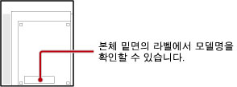

재생할 수 있는 디스크의 종류에 대하여
PS3™에서 재생할 수 있는 디스크의 종류는 PS3™ 모델에 따라 다릅니다. 사용하시는 PS3™에서 재생가능한 디스크는 제품에 동봉된 [사용상의 주의/고장이라고 생각될 때]에서 확인하실 수 있습니다.
PlayStation®2 규격 디스크/Super Audio CD의 재생에 대하여
PlayStation®2 규격 디스크/Super Audio CD는 다음 모델명의 PS3™에서만 재생할 수 있습니다. 모델명은 PS3™ 본체 밑면의 라벨에서 확인할 수 있습니다.

| 판매지역 | 모델명 |
|---|---|
| 일본 | CECHA00, CECHB00 |
| 미국/캐나다 | CECHA01, CECHB01, CECHE01 |
| 중남미 | CECHE11 |
| 유럽/오스트레일리아/뉴질랜드 | CECHC02, CECHC03, CECHC04, CECHC08 |
| 한국 | CECHE05 |
| 홍콩/대만/남아시아 | CECHA12, CECHB12, CECHE12, CECHA07, CECHB07, CECHA06, CECHE06 |
소프트웨어의 호환성에 대하여
PlayStation®2/PlayStation® 규격 디스크의 재생에 대응하는 PS3™에서도 일부 소프트웨어가 종래의 하드웨어에서와는 다르게 동작하거나 적절히 동작하지 않는 경우가 있습니다. 각 소프트웨어의 호환 상황에 대해서는 각 지역의 웹 사이트를 참조해 주십시오.
일본
http://www.jp.playstation.com/ps3/status/
미국/캐나다/중남미
http://www.us.playstation.com/Support/CompatibleStatus
유럽/오스트레일리아/뉴질랜드
PC http://uk.playstation.com/games-media/news/articles/detail/item83402/
PS3™ http://ps3.uk.playstation.com/news/detail/item83402/
한국
https://www.playstation.co.kr/support